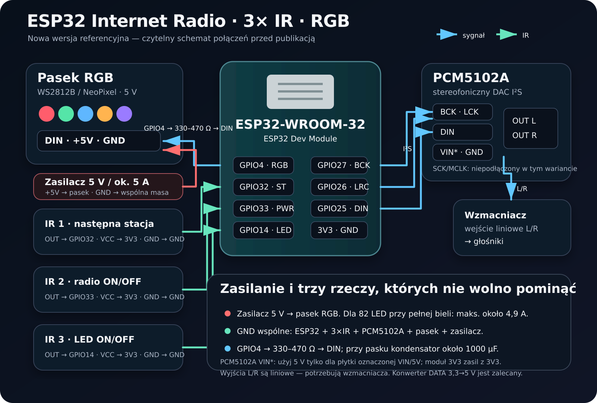

ESP32 Internet Radio
Mały, odtworzony od zera szkic: ESP32-WROOM, trzy proste czujniki IR, internetowe strumienie MP3, przetwornik PCM5102A i adresowalny pasek RGB. Tylko potrzebne funkcje — bez budowania rakiety.
Mały, odtworzony od zera szkic: ESP32-WROOM, trzy proste czujniki IR, internetowe strumienie MP3, przetwornik PCM5102A i adresowalny pasek RGB. Tylko potrzebne funkcje — bez budowania rakiety.
Nowa wersja używa bezpieczniejszych GPIO32 i GPIO33 zamiast problematycznego pinu rozruchowego GPIO12. To celowa poprawa względem starych prób.

Każdy gest przechodzi do kolejnego adresu strumienia; po ostatniej stacji wraca do pierwszej.
Zatrzymuje strumień i wycisza wyjście. Po ponownym włączeniu wraca do wybranej stacji.
Niezależnie włącza lub wyłącza pasek. Kolor pokazuje aktualnie wybraną stację.
| ESP32 | Moduł | Uwagi |
|---|---|---|
| GPIO27 | PCM5102A BCK | I²S bit clock |
| GPIO26 | PCM5102A LCK/LRCK | I²S word select |
| GPIO25 | PCM5102A DIN | dane audio z ESP32 |
| GPIO32 | IR STATION OUT | następna stacja |
| GPIO33 | IR POWER OUT | radio ON/OFF |
| GPIO14 | IR LED OUT | LED ON/OFF |
| GPIO4 | WS2812B DIN | przez rezystor 330–470 Ω |
| 3V3 | 3 × IR VCC | kod zakłada wyjście aktywne LOW; wyjścia nie mogą podawać 5 V do ESP32 |
| GND | wszystkie moduły | obowiązkowa wspólna masa |
Tools → Board → ESP32 Dev ModulePartition Scheme → Huge APP (3 MB No OTA / 1 MB SPIFFS)Huge APP powiększa miejsce na program i dekodery kosztem aktualizacji OTA. To flash, nie dodatkowy RAM.
Jeżeli Arduino wybierze inną bibliotekę Audio przeznaczoną dla płytek SAM, kod nie zadziała. W logu kompilacji trzeba sprawdzić ścieżkę do Audio.h.
Użytkownik wpisuje własne Wi‑Fi, liczbę diod i — jeśli trzeba — poprawną kolejność kolorów. Reszta może zostać bez zmian.
const char* WIFI_SSID = "WPISZ_NAZWE_WIFI";
const char* WIFI_PASSWORD = "WPISZ_HASLO_WIFI";
constexpr uint16_t LED_COUNT = 82;
// Typowy pasek WS2812B RGB:
#define LED_PIXEL_TYPE (NEO_GRB + NEO_KHZ800)
// Gdy czerwony i zielony są zamienione:
// #define LED_PIXEL_TYPE (NEO_RGB + NEO_KHZ800)
// Tylko dla paska RGBW z osobnym białym kanałem:
// #define LED_PIXEL_TYPE (NEO_GRBW + NEO_KHZ800)Do kodu trafia bezpośredni adres strumienia audio, nie zwykła strona radia. W przykładzie są trzy aktualne strumienie MP3 128 kb/s SomaFM.
groovesalad-128-mp3
dronezone-128-mp3
indiepop-128-mp3
Źródła / Sources: ESP32-audioI2S · Espressif partition tables · Adafruit NeoPixel · SomaFM direct streams